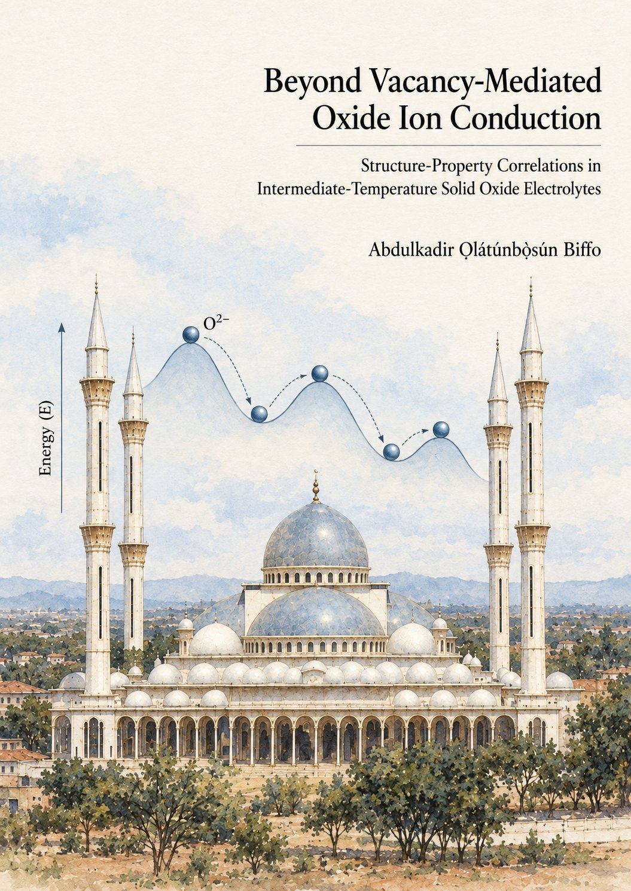

Watch the PhD defence live
Beyond Vacancy-Mediated Oxide Ion Conduction
Structure-Property Correlations in Intermediate-Temperature Solid Oxide Electrolytes
Tuesday 27 October 2026
- –
- days
- –
- hours
- –
- minutes
- –
- seconds
- Livestream opens (Netherlands)
- 09:55
- Ceremony starts (Netherlands)
- 10:00
- Ceremony starts in your time zone
Joining online
- Open the livestream link a few minutes before 09:55 Netherlands time. It works in any web browser on a phone, tablet or computer.
- Turn your sound on, and plug your phone in if you're watching on it.
https://nmclive.tudelft.nl/mediasite/play/b7e565817c874b09a5690927a4d021ec1d